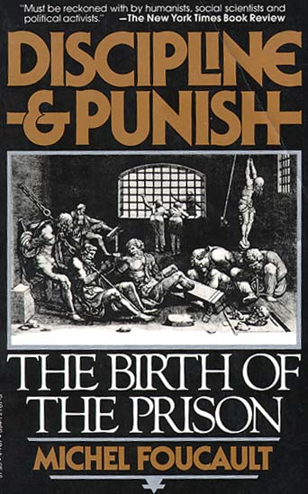
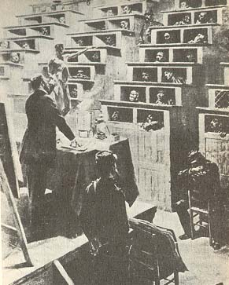
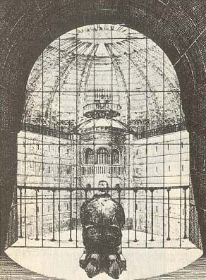
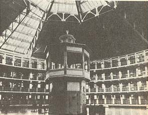

On 1 March 1757 Damiens the regicide was condemned "to make the amende honorable before the main door of the Church of Paris," where he was to be "taken and conveyed in a cart, wearing nothing but a shirt, holding a torch of burning wax weighing two pounds"; then, "in the said cart, to the Place de Grève, where, on a scaffold that will be erected there, the flesh will be torn from his breasts, arms, thighs and claves with red-hot pincers, his right hand, holding the knife with which he committed the said parricide, burnt with sulphur, and, on those places where the flesh will be torn away, poured molten lead, boiling oil, burning resin, wax and sulphur melted together and then his body drawn and quartered by four horses and his limbs and body consumed by fire, reduced to ashes and his ashes thrown to the winds" (Pièces originales..., 372-4).
"Finally, he was quartered," recounts the Gazette d'Amsterdam of 1 April 1757. "This last operation was very long, because the horses used were not accustomed to drawing; consequently, instead of four, six were needed; and when that did not suffice, they were forced, in order to cut off the wretch's thighs, to sever the sinews and hack at the joints...
"It is said that, though he was always a great swearer, no blashemy escaped his lips; but the excessive pain made him utter horrible cries, and he often repeated: 'My God, have pity on me! Jesus, help me!' The spectators were all edified by the solicitude of the parish priest of St Paul's who despite his great age did not spare himself in offering consolation to the patient."
Bouton, an officer of the watch, left us his account: "The sulphur was lit, but the flame was so poor that only the top skin of the hand was burnt, and that only slightly. Then the executioner, his sleeves rolled up, took the steel pincers, which had been especially made for the occasion, and which were about a foot and a half long, and pulled first at the calf of the right leg, then at the thigh, and from there at the two fleshy parts of the right arm; then at the breasts. Though a strong, sturdy fellow, this executioner found it so difficult to tear away the pieces of flesh that he set about the same spot two or three times, twisting the pincers as he did so, and what he took away formed at each part a wound about the size of a six-pound crown piece.
"After these tearings with the pincers, Damiens, who cried out profusely, though without swearing, raised his head and looked at himself; the same executioner dipped an iron spoon in the pot containing the boiling potion, which he poured liberally over each wound. Then the ropes that were to be harnessed to the horses were attached with cords to the patient's body; the horses were then harnessed and placed alongside the arms and legs, one at each limb.
"Monsieur Le Breton, the clerk of the court, went up to the patient several times and asked him if he had anything to say. He said he had not; at each torment, he cried out, as the damned in hell are supposed to cry out, 'Pardon, my God! Pardon, my Lord.' Despite all this pain, he raised his head from time to time and looked at himself boldly. The cords had been tied so tightly by the men who pulled the ends that they caused him indescribable pain. Monsieur le [sic] Breton went up to him again and asked him if he had anything to say; he said no. Several confessors went up to him and spoke to him at length; he willingly kissed the crucifix that was held out to him; he opened his lips and repeated: 'Pardon, Lord.'
"The horses tugged hard, each pulling straight on a limb, each horse held by an executioner. After a quarter of an hour, the same ceremony was repeated and finally, after several attempts, the direction of the horses had to be changed, thus: those at the arms were made to pull towards the head, those at the thighs towards the arms, which broke the arms at the joints. This was repeated several times without success. He raised his head and looked at himself. Two more horses had to be added to those harnessed to the thighs, which made six horses in all. Without success.
"Finally, the executioner, Samson, said to Monsieur Le Breton that there was no way or hope of succeeding, and told him to ask their Lordships if they wished him to have the prisoner cut into pieces. Monsieur Le Breton, who had come down from the town, ordered that renewed efforts be made, and this was done; but the horses gave up and one of those harnessed to the thighs fell to the ground. The confessors returned and spoke to him again. He said to them (I heard him): 'Kiss me, gentlemen.' The parish priest of St Paul's did not dare to, so Monsieur de Marsilly slipped under the rope holding the left arm and kissed him on the forehead. The executioners gathered round and Damiens told them not to swear, to carry out their task and that he did not think ill of them; he begged them to pray to God for him, and asked the parish priest of St Paul's to pray for him at the first mass.
"After two or three attempts, the executioner Samson and he who had used the pincers each drew out a knife from his pocket and cut the body at the thighs instead of severing the legs at the joints; the four horses gave a tug and carried off the two thighs after them, namely, that of the right side first, the other following; then the same was done to the arms, the shoulders, the arm-pits and the four limbs; the flesh had to be cut almost to the bone, the horses pulling hard carried off the right arm first and the other afterwards.
"When the four limbs had been pulled away, the confessors came to speak to him; but his executioner told them that he was dead, though the truth was that I saw the man move, his lower jaw moving from side to side as if he were talking. One of the executioners even said shortly afterwards that when they had lifted the trunk to throw it on the stake, he was still alive. The four limbs were untied from the ropes and thrown on the stake set up in the enclosure in line with the scaffold, then the trunk and the rest were covered with logs and faggots, and fire was put to the straw mixed with this wood.
"...In accordance with the decree, the whole was reduced to ashes. The last piece to be found in the embers was still burning at half-past ten in the evening. The pieces of flesh and the trunk had taken about four hours to burn. The officers of whom I was one, as also was my son, and a detachment of archers remained in the square until nearly eleven o'clock.
"There were those who made something of the fact that a dog had lain
the day before on the grass where the fire had been, had been chased
away
several times, and had always returned. But it is not difficult to
understand
that an animal found this place warmer than elsewhere" (quoted in
Zevaes,
201-14).
Eighty years later, Léon Faucher drew up his rules "for the House of young prisoners in Paris":
"Art. 17. The prisoners' day will begin at six in the morning in winter and at five in summer. They will work for nine hours a day throughout the year. Two hours a day will be devoted to instruction. Work and the day will end at nine o'clock in winter and at eight in summer.
Art. 18. Rising. At the first drum-roll, the prisoners must rise and dress in silence, as the supervisor opens the cell doors. At the second drum-roll, they must be dressed and make their beds. At the third, they must line up and proceed to the chapel for morning prayer. There is a five-minute interval between each drum-roll.
Art. 19. The prayers are conducted by the chaplain and followed by a moral or religious reading. This exercise must not last more than half an hour.
Art. 20. Work. At a quarter to six in the summer, a quarter to seven in winter, the prisoners go down into the courtyard where they must wash their hands and faces, and receive their first ration of bread. Immediately afterwards, they form into work-teams and go off to work, which must begin at six in summer and seven in winter.
Art. 21. Meal. At ten o'clock the prisoners leave their work and go to the refectory; they wash their hands in their courtyards and assemble in divisions. After the dinner, there is recreation until twenty minutes to eleven.
Art. 22. School. At twenty minutes to eleven, at the drum-roll, the prisoners form into ranks, and proceed in divisions to the school. The class lasts two hours and consists alternately of reading, writing, drawing and arithmetic.
Art. 23. At twenty minutes to one, the prisoners leave the school, in divisions, and return to their courtyards for recreation. At five minutes to one, at the drum-roll, they form into workteams.
Art. 24. At one o'clock they must be back in the workshops: they work until four o'clock.
Art. 25. At four o'clock the prisoners leave their workshops and go into the courtyards where they wash their hands and form into divisions for the refectory.
Art. 26. Supper and the recreation that follows it last until five o'clock: the prisoners then return to the workshops.
Art. 27. At seven o'clock in the summer, at eight in winter, work stops; bread is distributed for the last time in the workshops. For a quarter of an hour one of the prisoners or supervisors reads a passage from some instructive or uplifting work. This is followed by evening prayer.
Art. 28. At half-past seven in summer, half-past eight in winter,
the
prisoners must be back in their cells after the washing of hands and
the
inspection of clothes in the courtyard; at the first drum-roll, they
must
undress, and at the second get into bed. The cell doors are closed and
the supervisors go the rounds in the corridors, to ensure order and
silence"
(Faucher, 274, 82).
We have, then, a public execution and a time-table. They do not punish the same crimes or the same type of delinquent. But they each define a certain penal style. Less than a century separates them. It was a time when, in Europe and in the United States, the entire economy of punishment was redistributed. It was a time of great "scandals" for traditional justice, a time of innumerable projects for reform. It saw a new theory of law and crime, a new moral or political justification of the right to punish; old laws were abolished, old customs died out. "Modern" codes were planned or drawn up: Russia, 1769; Prussia, 1780; Pennsylvania and Tuscany, 1786; Austria, 1788; France, 1791, Year IV, 1808 and 1810. It was a new age for penal justice.
Among so many changes, I shall consider one: the disappearance of torture as a public spectacle. Today we are rather inclined to ignore it; perhaps, in its time, it gave rise to too much inflated rhetoric; perhaps it has been attributed too readily and too emphatically to a process of "humanization", thus dispensing with the need for further analysis. And, in any case, how important is such a change, when compared with the great institutional transformations, the formulation of explicit, general codes and unified rules of procedure; with the almost universal adoption of the jury system, the definition of the essentially corrective character of the penalty and the tendency, which has become increasingly marked since the nineteenth century, to adapt punishment to the individual offender? Punishment of a less immediately physical kind, a certain discretion in the art of inflicting pain, a combination of more subtle, more subdued sufferings, deprived of their visible display, should not all this be treated as a special case, an incidental effect of deeper changes? And yet the fact remains that a few decades saw the disappearance of the tortured, dismembered, amputated body, symbolically branded on face or shoulder, exposed alive or dead to public view. The body as the major target of penal repression disappeared.
